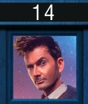
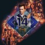
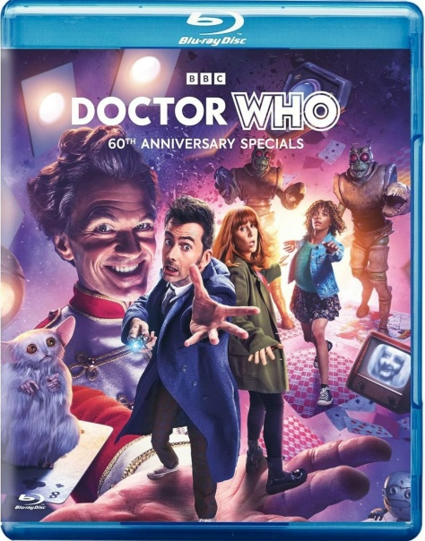

Таблица коллекции |  Навигация по канону |  Связные экранизации |
Таблица коллекции | Навигация по канону | Связные экранизации |





Эра Четырнадцатого Доктора
Актёр: Дэвид Теннант

Четырнадцатый Доктор снова с Донной Ноубл, и сезон работает как тёплое воссоединение с привкусом прощания. Тон ностальгический, но не застывший — Дэвис вводит концепцию бигенерации, впервые разделяя Доктора надвое и прямо передавая эстафету Пятнадцатому. Мюррей Голд возвращается к музыке, знакомые лица появляются на экране, а сам цикл ощущается как праздник с горчинкой — радость встречи перемежается с темой конечности и смены эпох.
Наш плейлист сезона в ВК